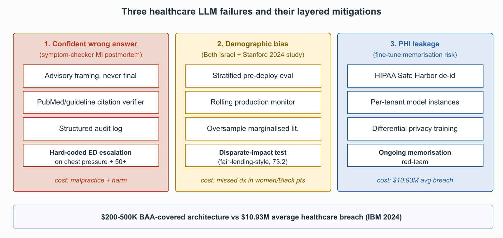

"A confident wrong answer in healthcare is the most expensive sentence an LLM can produce. The mitigation list is short and load-bearing."
Hallux, Healthcare-Hallucination-Steward AI Agent
Three failure modes are uniquely costly in healthcare: confident wrong answers in high-stakes clinical contexts, systematic bias across demographic groups, and privacy leakage of protected health information. Each has a malpractice or regulatory consequence that does not exist in less-regulated industries. Each also has a validated mitigation pattern. This section walks through each failure mode, the mechanism that produces it, and the production response.

Prerequisites
This section assumes the healthcare LLM use cases from Section 69.1, the hallucination vocabulary from Section 47.1, and the bias-and-fairness framing from Section 50.1.
Confident Wrong Answers in High-Stakes Contexts
The medical-LLM bias problem traces partly to the "Bigelow's Anatomy" lineage: roughly 80% of medical illustration in U.S. textbooks until the 1990s depicted white male bodies as the default. LLMs trained on this corpus inherit the bias structurally, which is why the 2024 Stanford CRFM study "Underdiagnosis Bias of Artificial Intelligence Algorithms" recommended actively oversampling marginalized-group medical literature during fine-tuning.
The standard LLM hallucination problem becomes a malpractice problem in clinical contexts. The mitigations: never let an LLM be the final decision-maker on care; always cite the source guideline or paper; instrument every clinical interaction with structured logging that supports retrospective audit.
The mechanism is the standard one across all LLM contexts: the model produces a fluent, well-structured answer that sounds authoritative regardless of whether the underlying claim is correct. In a clinical context the cost of acting on a wrong answer is unique: a hallucinated drug-interaction warning can cause an unnecessary medication change; a missed warning can cause adverse events. The mitigations in production deployments are four layers stacked, each of which has failed alone in at least one published incident:
- The LLM is scoped to advisory roles, never to the final decision.
- Every clinically relevant claim cites a specific guideline or paper, and citations are verified against PubMed or the relevant guideline body before display.
- Every interaction is logged with full context for retrospective review when an adverse outcome is being investigated.
- The user interface frames the LLM output as "for your consideration" rather than as instruction.
Bias Across Demographic Groups
LLMs trained on text dominated by U.S. white-male medical literature systematically under-recognize symptoms in women, Black patients, and other under-represented groups. This pattern is well-documented across imaging AI and is now documented for clinical-text LLMs too. Mitigations are in early days: stratified evaluation across demographic groups, dataset augmentation with under-represented sources, ongoing bias monitoring in production.
The pattern is well-documented across pre-LLM clinical ML (pulse oximetry under-reads on darker skin, dermatology models miss melanoma in non-white patients) and the LLM era has not solved it. Several 2024 to 2025 evaluations showed that frontier LLMs produce systematically different differential-diagnosis recommendations for clinically equivalent vignettes that differ only by stated patient race or gender. The mitigation pattern in production is operational rather than purely architectural: stratified evaluation sets that test the model on demographically diverse vignettes before deployment, ongoing monitoring of recommendation distributions across patient demographics in production, and explicit feedback loops to retrain or fine-tune when disparities emerge. Several large health systems now require demographic-disparate-impact testing as part of their pre-deployment evaluation, modeled on the fair-lending testing that Section 68.2 covers for finance.
Privacy Leakage
PHI must be handled under HIPAA in the U.S., NHS data-protection rules in the UK, GDPR special-category provisions in the EU. The most common failure: training or fine-tuning on production patient data without proper de-identification, then having the model regurgitate identifiable information at inference. The mitigations are well-known but operationally demanding: BAAs with all LLM providers, on-premise or HIPAA-eligible cloud deployments, strict de-identification pipelines, rate-limiting to defeat membership-inference attacks. (See Section 50.1 on privacy attacks.)
The failure pattern: a health system fine-tunes a model on production clinical notes, intending to capture the local style and vocabulary. The notes contain PHI; the fine-tuning is unintentionally an information-leakage channel; under sufficient adversarial probing the model can be coaxed to reproduce specific patient information. The mitigation pattern is four layers; getting any one wrong reintroduces the leakage:
- De-identification of any training data using validated pipelines (Safe Harbor or Expert Determination per HIPAA).
- Per-tenant model instances so that one health system's fine-tune cannot be probed from another tenant.
- Differential-privacy training where data sensitivity warrants the accuracy trade-off.
- Ongoing red-teaming for memorization.
The pattern depends on getting the BAA-covered architecture right; Section 69.4 covers it in detail.
Liability Allocation
The malpractice question of "who is responsible when an LLM-assisted decision goes wrong?" remains substantially unsettled in 2026. The dominant pattern at U.S. health systems is to maintain clinician responsibility absolutely: the clinician reviews and signs, the LLM is a tool, the responsibility tracks the signature. Health-system liability insurers have accepted this framing but are increasingly pricing AI usage into premiums, and several large insurers now require disclosure of AI use in standard credentialing forms. The framing parallels the legal-industry duty-of-supervision (Section 67.3), though the specific regulatory body differs.
Patient Trust and Informed Consent
A subtler failure mode: patients learn that their visit was recorded and transcribed by AI, and the trust impact varies by context. Studies through 2025 suggest most patients are accepting of ambient-AI documentation when consent is asked clearly, the recording indicator is visible, and the use is explained ("this helps the doctor focus on you instead of typing"). Trust erodes quickly when consent is buried in admission paperwork or when the patient is unaware. The pattern that works: visible consent at the start of each visit, a clear recording indicator, and the option to decline without friction. Most ambient-AI vendors have built this into the product UX as a default.
A composite of incident reports from 2023 to 2024 (none individually disclosed, the pattern is common). A patient-facing symptom-checker chatbot, deployed by a large health-payer for after-hours triage, told a 52-year-old woman experiencing chest pressure and jaw pain that her symptoms were "consistent with anxiety or muscle strain" and suggested rest and over-the-counter analgesics. The patient delayed seeking care; by the time she presented at an ED several hours later, she had completed a myocardial infarction. The post-mortem identified two compounding failures: (1) the symptom-checker's training data under-represented atypical MI presentations in women (the "Hollywood heart attack" bias), and (2) the prompt design did not include a forced-escalation rule for any combination of cardiac-related symptoms in patients over 50. The remediation deployed across the industry afterward was twofold: a hard rule that any chest-pressure-plus-systemic-symptoms presentation triggers an "go to emergency care" escalation regardless of model confidence, and a demographic-disparate-impact evaluation that explicitly tests atypical presentations in under-represented groups. The lesson generalizes: the highest-stakes failure modes are often the ones with low base rates and high consequence, and the model's confident-by-default behavior is the wrong default in those scenarios. Hard-coded escalation rules for known high-stakes patterns are not optional.
Who. A multi-institutional research consortium led by Beth Israel Deaconess, Stanford, and the University of California, conducted a 2024 evaluation of GPT-4, Claude, and Gemini-class models on clinical vignettes systematically varied by patient race and gender. Situation. The team constructed roughly 600 clinical scenarios from the MERIT and similar vignette banks, replicated each with race (Black, White, Hispanic) and gender (male, female) labels swapped while keeping symptoms, vitals, and history identical. Problem. Frontier LLMs produced systematically different differential-diagnosis rankings and recommended workups across demographic groups despite clinically identical presentations: chest-pain vignettes in women were less likely to receive cardiac-specific workup recommendations; abdominal-pain vignettes in Black patients were more likely to be routed to pain-management questions than to surgical evaluation. Decision. Several large U.S. health systems adopted a pre-deployment stratified-evaluation protocol modeled on fair-lending testing in finance (Section 68.2): every clinical-decision-support tool must be evaluated on demographically-stratified vignette sets before going live, and on a rolling basis in production. How. The evaluation runs the candidate model on matched vignettes, computes differential-diagnosis distribution shifts across demographic axes, and flags disparities above a threshold for clinician review and prompt-tuning. Result. Several frontier-vendor procurement processes through 2025 explicitly required disparate-impact disclosure as a condition of award. Lesson. Bias mitigation in clinical LLMs is operational, not purely architectural: stratified evaluation, ongoing monitoring, and explicit feedback loops, not just better training data.
HIPAA penalties scale by tier, capped at $1.99M per violation type per calendar year under the 2025 HHS Notice of Adjustment. The 2024 IBM Cost of a Data Breach Report placed the average healthcare breach at $10.93M, the highest of any sector and roughly 2.5x the cross-industry average of $4.45M. Patient-record-level reputational and class-action settlements add a multiplier: the 2023 Cerebral Health Inc. settlement valued each exposed PHI record at roughly $50-$200 depending on sensitivity, and a 500,000-record breach therefore implies a $25-$100M tail exposure beyond HIPAA fines.
Against this backdrop, the marginal cost of correct deployment is small. A signed BAA with Azure OpenAI Service for Healthcare or AWS Bedrock HIPAA-eligible carries no per-incident charge beyond ordinary usage; differential-privacy training adds roughly 1-3 percent absolute degradation on most medical-QA benchmarks; HIPAA-eligible inference endpoints add no measurable latency penalty over commercial tiers. A health system spending $200K-$500K on BAA-covered architecture and proper de-identification pipelines is buying expected-value protection against a $10M+ tail event. The ROI calculation is dominated by the breach-avoidance term, not the productivity term, which is why compliance leadership rather than engineering leadership typically owns the deployment decision.
- Section 50.1 (Privacy Attacks) for the membership-inference and extraction mechanics that make PHI fine-tuning risky.
- Chapter 50 (Privacy and Data Protection) for the broader privacy-attack and differential-privacy framing.
- Chapter 54 (Bias and Fairness) for the stratified-evaluation methodology used in disparate-impact testing.
- Section 67.3 (Duty of Supervision) for the liability-allocation parallel in legal deployments.
- Section 69.4 (HIPAA-Compliant Deployment Patterns) for the BAA-covered, de-identified, VPC-isolated, and on-premises patterns that operationalize these mitigations.
- Confident wrong answers become malpractice in clinical contexts: layered mitigations (advisory framing, citation verification against PubMed and guidelines, structured audit logging, advisory-only UI) are non-negotiable because a hallucinated drug interaction or missed warning translates directly into patient harm.
- Demographic bias is operational, not just architectural: frontier models give different differentials for clinically identical vignettes that differ only by stated race or gender, so stratified pre-deployment evaluation and rolling production monitoring (modeled on fair-lending testing) are mandatory.
- PHI leakage rides on fine-tuning: clinical-note fine-tunes encode patient information into weights, and the layered defense is HIPAA Safe Harbor or Expert Determination de-identification, per-tenant model instances, differential privacy where warranted, and ongoing memorization red-teaming.
- Liability tracks the signature: U.S. health systems keep clinician responsibility absolute, with the LLM as advisory tool and insurers increasingly requiring AI-use disclosure in credentialing forms, paralleling the legal industry's duty-of-supervision pattern.
- Hard-coded escalation beats model confidence: the symptom-checker that missed an MI in a 52-year-old woman taught the field that low-base-rate, high-consequence patterns (chest pressure plus systemic symptoms over 50) need rule-based forced-escalation regardless of what the model thinks.
- Patient trust depends on visible consent: ambient-AI documentation is accepted when the recording indicator and decline option are clear at the start of each visit, and erodes quickly when consent is buried in admission paperwork.
What Comes Next
Section 69.3 walks through the regulatory framework that constrains healthcare LLM deployment: FDA SaMD, HIPAA, EU AI Act high-risk classification, state-level licensure rules, and the multi-stakeholder consensus standards from CHAI and similar bodies.
Show Answer
Show Answer
Show Answer
What's Next?
In the next section, Section 69.3: Regulatory Framework for Healthcare LLMs, we build on the material covered here.